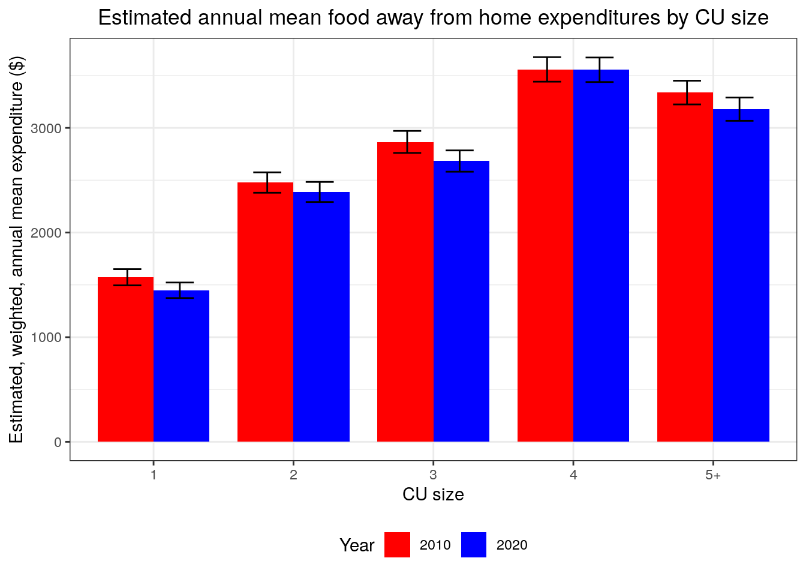
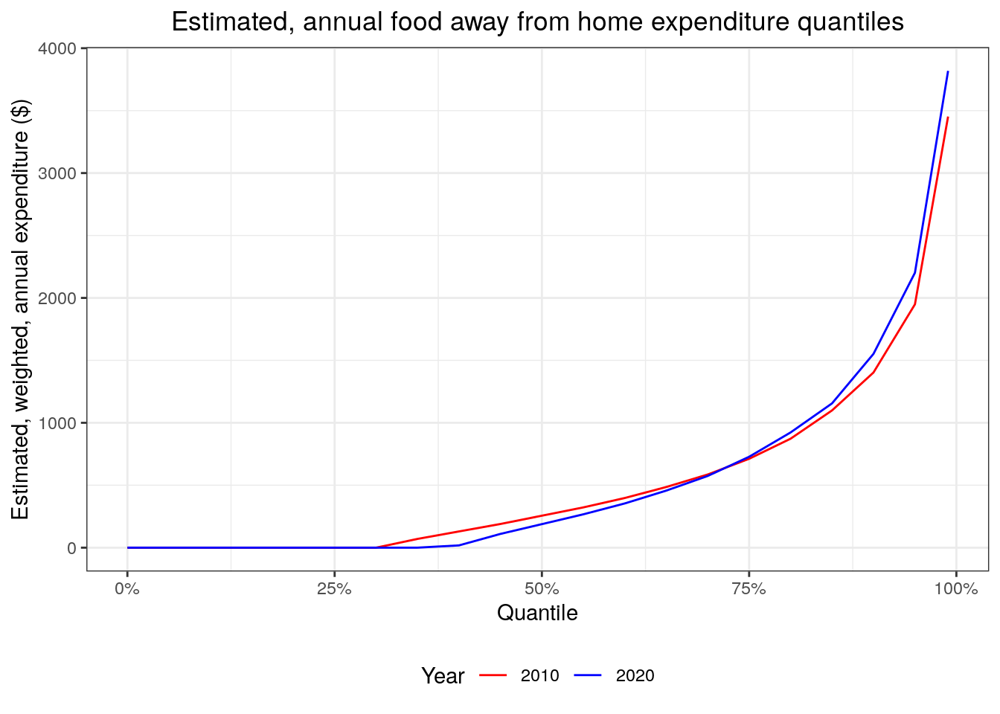

cepumd facilitates the calculation of Consumer Expenditure Survey (CE) annual, weighted, estimated mean expenditures using CE Public-Use Microdata (PUMD) by addressing some unique challenges that exist in working with CE PUMD. Some examples are:
For more information on the CE, please visit https://www.bls.gov/cex/.
The workhorse of cepumd is
ce_prepdata(). It merges the household characteristics file
(FMLI/-D) with the corresponding expenditure tabulation file (MTBI/EXPD)
for a specified year, adjusts weights for months-in-scope and the number
of collection quarters, adjusts some cost values by their periodicity
factor (some cost categories are represented as annual figures and
others as quarterly). With the recent update it only requires the first
3 arguments to function: the year, the survey type, and one or more
valid UCCs. ce_prepdata() now creates all of the other
necessary objects within the function if not provided.
There are three other functions that help the user download and wrangle the data and necessary documentation, such as the HG files:
ce_download() downloads zip files for a given year and
survey instrument directly from the CE websitece_hg() pulls the requested type of HG file (Interview,
Diary, or Integrated) for a specified year.ce_uccs() filters the HG file for the specified
expenditure category and returns either a data frame with only that
section of the HG file or the Universal Classification Codes (UCCs) that
make up that expenditure category.There are two functions that the user can use to calculate CE summary statistics:
ce_mean() calculates a mean expenditure, standard error
of the mean, coefficient of variation, and an aggregate
expenditure.ce_quantiles() calculates weighted expenditure
quantiles. It is important to note that calculating medians for
integrated expenditures is not recommended because the calculation
involves using weights from both the Diary and Survey instruments.There are two functions that allow the user to download metadata that can be useful in preparing data:
store_ce_hg() downloads the zip file containing all HG
files maintained by the CE to the specified location.store_ce_dict() downloades the CE PUMD dictionary from
CE’s website to the specified location.Finally, there are two utility functions to make the workflow a bit easier:
ce_pumd_years() scrapes the main PUMD website to get a
vector of years for which PUMD are available. The vector is limited to
the years for which there are also HG files available.ce_cleanup() deletes a file containing CE data that may
only be necessary temporarily.Due to changes in the way CE PUMD stores their data starting with the
2020 PUMD I revisited the way that the main functions of cepumd stores and
accesses files locally. The most important change is that all files are
expected to be stored in one directory. To that end, if a directory is
not provided to the functions, one will be created in the local
temporary directory. Also, most of the functions used for downloading or
preparing data now take a ce_dir argument to help with
this. The major benefit of this change is that all files are now in one
place and can be quickly cleaned up. An ancillary benefit is that it can
make the workflow much simpler for quickly getting an expenditure
estimate.
The CE PUMD is a wonderfully rich data set that can provide all manner of insight into how Americans spend money, but there are some strict limitations with respect to the types of analyses that can be done with this data. One of the more common violations of sound statistical methodology that I’m aware of is trying to calculate annual expenditure means for subgroups that are defined by variables that were not used in the sample design, i.e., the weights. The best advice that I can give is that users of this package (or anyone using CE PUMD to estimate annual expenditures) is to stick to the same classifications used by the CE in their published tables. I’ll also point users of this package to the CE PUMD Getting Started Guide.
You can install the development version of cepumd from GitHub with:
devtools::install_github("arcenis-r/cepumd")The first step is to load the necessary packages into the environment.
# Store a vector of names of additional packages to be used
pkgs <- c("tidyverse", "devtools", "rlang", "readxl", "knitr")
# Install packages from CRAN
invisible(
sapply(
pkgs, function(x) if (!x %in% installed.packages()) install.packages(x)
)
)
library(knitr)
library(readxl)
library(tidyverse)
library(cepumd)The following is an example of how someone might go about using cepumd to calculate a 2021 annual, weighted estimate of mean expenditures on pets for all of the U.S. using CE integrated data without creating a separate directory for the data. This is just a quick and easy calculation.
ex1 <- ce_prepdata(
2021,
integrated,
uccs = ce_hg(2021, integrated) %>% ce_uccs("Pets")
) %>%
ce_mean() %>%
kable(booktabs = TRUE)Yup… that’s all it takes. I simply ran ce_prepdata()
with the year, the survey type, and the uccs I needed and piped that
directly into ce_mean().
But where are all the files? Zip files, etc.? They’re in my R session’s temporary directory under a sub-directory named “ce-data”.
list.files(file.path(tempdir(), "ce-data"))
#> [1] "ce-stubs.zip" "diary21" "diary21.zip" "intrvw20" "intrvw20.zip"
#> [6] "intrvw21" "intrvw21.zip"I’ll go ahead and clean those files up really quickly.
ce_cleanup()
list.files(file.path(tempdir(), "ce-data"))
#> character(0)This works because if ce_cleanup() isn’t given a
directory to clean up it looks R’s temporary directory for a
sub-directory called “ce-data”. If it doesn’t find that AND it gets no
other directory to look in, it returns a message saying there’s nothing
to clean up.
In this example I’ll calculate estimated annual expenditures on used
cars and trucks by urbanicity also for 2021. I already know that the UCC
for used cars is 460110 for and the UCC for used trucks is 460901. I
also know that all of these data are collected through the interview
survey, so I’ll use the interview data only. Now here’s a wrinkle:
because I’m going to add a grouping variable (“BLS_URBN”), I do need to
specify all of the other named arguments. This is due to the developer’s
inexperience with using missing arguments (if anyone can help me out
with this, I would greatly appreciate it). Once the data are prepped
with ce_data() I’ll just nest the data by urbanicity and
run ce_means() on the nested datasets.
ce_prepdata(
2021,
interview,
uccs = c("460110", "460901"),
recode_variables = TRUE,
ce_dir = NULL,
dict_path = NULL,
int_zp = NULL,
dia_zp = NULL,
hg = NULL,
bls_urbn
) %>%
nest(data = -bls_urbn) %>%
mutate(ce_mn_df = map(data, ce_mean)) %>%
select(-data) %>%
unnest(ce_mn_df) %>%
kable(booktabs = TRUE)| bls_urbn | agg_exp | mean_exp | se | cv |
|---|---|---|---|---|
| Urban | 310383802180 | 2472.104 | 49.69722 | 2.010321 |
| Rural | 30912654497 | 3844.600 | 61.73577 | 1.605779 |
ce_cleanup()There have been 2 examples of calculated a mean estimate in the last 2 examples, but getting the annual, weighted estimate of the median would be just as easy. Since I’m using interview data only here, this would be a good example. I’ll calculate the overall median rather than breaking it down by urbanicity.
ce_prepdata(
2021,
interview,
uccs = c("460110", "460901")
) %>%
ce_quantiles() %>%
kable(booktabs = TRUE)| probs | quantile |
|---|---|
| 50% | 0 |
ce_cleanup()In this last example I’m going to assume very little knowledge about the CE. I’d like to compare mean annual expenditures on food away from home between 2010 and 2020 by household size. Also, I’m going to set up a directory on my local machine to put all the data and metadata files into.
First, I’ll set up that directory. I’ll put the directory path in a variable called “food_away_dir” for simplicity.
food_away_dir <- file.path("..", "food-away")
dir.create(food_away_dir)
list.files(food_away_dir)
#> character(0)Next, I want to make sure that there are data for my years of interest.
ce_pumd_years()
#> [1] 2021 2020 2019 2018 2017 2016 2015 2014 2013 2012 2011 2010 2009 2008 2007
#> [16] 2006 2005 2004 2003 2002 2001 2000 1999 1998 1997Now I want to store the CE HG files and data dictionary.
store_ce_hg(food_away_dir)
store_ce_dict(food_away_dir)Let’s take a look at what the files are called.
list.files(food_away_dir)
#> [1] "ce-dict.xlsx" "ce-stubs.zip"Next I want to see what the 2010 HG file looks like for 2010 for expenditures on “food away from home”. First I’ll download both HG files (2010 and 2020), then I’ll find the correct title in the 2010 HG file for my category. I’m going to cheat a little by magically knowing that the title is the same in 2020.
hg_10 <- ce_hg(2010, integrated, food_away_dir)
hg_20 <- ce_hg(2020, integrated, food_away_dir)food_away_title <- hg_10 %>%
filter(str_detect(title, "[F|f]ood [A|a]way")) %>%
pull(title)
food_away_title
#> [1] "Food away from home"Now I’ll use that title to get the UCCs and see the entire table with “food away from home” expenditures for 2010
food_away_hg_10 <- ce_uccs(hg_10, food_away_title, uccs_only = FALSE)
food_away_hg_20 <- ce_uccs(hg_20, food_away_title, uccs_only = FALSE)
food_away_hg_10 %>% kable(booktabs = TRUE)| level | title | ucc | survey | factor |
|---|---|---|---|---|
| 3 | Food away from home | FOODAWAY | G | 1 |
| 4 | Meals at restaurants, carry outs and other | RESTCOAO | G | 1 |
| 5 | Lunch | LUNCH | G | 1 |
| 6 | Lunch at fast food, take-out, delivery, concession stands, buffet and cafeteria (other than employer | 190111 | D | 1 |
| 6 | Lunch at full service restaurants | 190112 | D | 1 |
| 6 | Lunch at vending machines and mobile vendors | 190113 | D | 1 |
| 6 | Lunch at employer and school cafeterias | 190114 | D | 1 |
| 5 | Dinner | DINNER | G | 1 |
| 6 | Dinner at fast food, take-out, delivery, concession stands, buffet and cafeteria (other than employer | 190211 | D | 1 |
| 6 | Dinner at full service restaurants | 190212 | D | 1 |
| 6 | Dinner at vending machines and mobile vendors | 190213 | D | 1 |
| 6 | Dinner at employer and school cafeterias | 190214 | D | 1 |
| 5 | Snacks and nonalcoholic beverages | SNKNABEV | G | 1 |
| 6 | Snacks and nonalcoholic beverages at fast food, take-out, delivery, concession stands, buffet and | 190311 | D | 1 |
| 6 | Snacks and nonalcoholic beverages at full service restaurants | 190312 | D | 1 |
| 6 | Snacks and nonalcoholic beverages at vending machines and mobile vendors | 190313 | D | 1 |
| 6 | Snacks and nonalcoholic beverages at employer and school cafeterias | 190314 | D | 1 |
| 5 | Breakfast and brunch | BRKFBRUN | G | 1 |
| 6 | Breakfast and brunch at fast food, take-out, delivery, concession stands, buffet and cafeteria | 190321 | D | 1 |
| 6 | Breakfast and brunch at full service restaurants | 190322 | D | 1 |
| 6 | Breakfast and brunch at vending machines and mobile vendors | 190323 | D | 1 |
| 6 | Breakfast and brunch at employer and school cafeterias | 190324 | D | 1 |
| 4 | Food or board at school | 190901 | I | 1 |
| 4 | Catered affairs | 190902 | I | 1 |
| 4 | Food on out-of-town trips | 190903 | I | 1 |
| 4 | School lunches | 790430 | I | 1 |
| 4 | Meals as pay | 800700 | I | 1 |
| 2 | Alcoholic beverages | ALCBEVG | G | 1 |
Next I’ll use the dictionary to find the variable for household size. First I’ll take a look at the sheets in the dictionary.
ce_dict_file_path <- file.path(food_away_dir, "ce-dict.xlsx")
excel_sheets(ce_dict_file_path)
#> [1] "Cover" "Variables" "Codes "Now I’ll see what variables contain anything about the number of household members. To do that I’ll have to load the sheet from the dictionary containing the variable definitions
ce_variables <- read_excel(ce_dict_file_path, sheet = "Variables")
ce_variables %>%
filter(
str_detect(File, "FMLI"), is.na(`Last year`),
str_detect(
tolower(`Variable description`), "number of members"
)
) %>%
kable(booktabs = TRUE)| Survey | File | Variable Name | Variable description | Formula | Flag name | Section number | Section description | Section part | First year | First Quarter | Last quarter | Last year | Comment |
|---|---|---|---|---|---|---|---|---|---|---|---|---|---|
| INTERVIEW | FMLI | AS_COMP5 | Number of members under age 2 in CU | COUNT (AGE < 2) | AS_C_MP5 | NA | CU characteristics, income, weights, and summary level expenditures. | NA | 1984 | 1 | NA | NA | NA |
| INTERVIEW | FMLI | FAM_SIZE | Number of Members in CU | NA | FAM__IZE | NA | CU characteristics, income, weights, and summary level expenditures. | NA | 1984 | 1 | NA | NA | NA |
It looks like FAM_SIZE is the variable I want. Next I’ll check whether the FAM_SIZE variable has any value codes associated with it. I’ll have to pull in the “Codes” sheet. (Check your spelling here.)
ce_codes <- read_excel(ce_dict_file_path, sheet = "Codes ")
ce_codes %>%
filter(File %in% "FMLI", Variable %in% "FAM_SIZE") %>%
kable(booktabs = TRUE)| Survey | File | Variable | Code value | Code description | First year | First quarter | Last year | Last quarter | Comment | …11 |
|---|
It looks like FAM_SIZE is not a coded variable (no observations in the “Codes” sheet), so it must be numeric. With all that, I’m ready to prepare my data. The first thing I’ll need are the UCCs for each of the two years in my analysis.
food_away_uccs_10 <- ce_uccs(food_away_hg_10, food_away_title, uccs_only = TRUE)
food_away_uccs_20 <- ce_uccs(food_away_hg_20, food_away_title, uccs_only = TRUE)
food_away_uccs_10
#> [1] "190111" "190112" "190113" "190114" "190211" "190212" "190213" "190214"
#> [9] "190311" "190312" "190313" "190314" "190321" "190322" "190323" "190324"
#> [17] "190901" "190902" "190903" "790430" "800700"Next I’ll prepare the 2010 data and get a summary of the FAM_SIZE variable since it is a continuous variable.
food_away_data_10 <- ce_prepdata(
2010,
integrated,
food_away_uccs_10,
recode_variables = FALSE,
ce_dir = food_away_dir,
dict_path = "ce-dict.xslx",
int_zp = NULL,
dia_zp = NULL,
hg = food_away_hg_10,
fam_size
)
summary(food_away_data_10$fam_size)
#> Min. 1st Qu. Median Mean 3rd Qu. Max.
#> 1.000 1.000 2.000 2.592 4.000 14.000Since some households have as many as 14 people, I’ll create a FAM_SIZE label with any number greater than 4 taking on the value “5+” later on. Next, I’ll prepare the 2020 data and rowbind it with the 2010 data as well as create the “fam_size_label” variable. I’ll also go ahead and get weighted, annual estimated means in one go.
food_away_data_20 <- ce_prepdata(
2020,
integrated,
food_away_uccs_20,
recode_variables = FALSE,
ce_dir = food_away_dir,
dict_path = "ce-dict.xslx",
int_zp = NULL,
dia_zp = NULL,
hg = food_away_hg_20,
fam_size
)
food_away_comp_data <- food_away_data_10 %>%
mutate(year = 2010) %>%
bind_rows(food_away_data_20 %>% mutate(year = 2020)) %>%
mutate(
fam_size_label = if_else(fam_size > 4, "5+", as.character(fam_size)),
year = factor(year)
) %>%
nest(data = -c(year, fam_size_label)) %>%
mutate(ce_mn_df = map(data, ce_mean)) %>%
ungroup() %>%
select(-data) %>%
unnest(ce_mn_df) %>%
mutate(
lower = mean_exp - (qnorm(0.975) * se),
upper = mean_exp + (qnorm(0.975) * se)
)
food_away_comp_data %>% kable(booktabs = TRUE)| year | fam_size_label | agg_exp | mean_exp | se | cv | lower | upper |
|---|---|---|---|---|---|---|---|
| 2010 | 2 | 97933894378 | 2477.569 | 49.74981 | 2.008009 | 2380.061 | 2575.077 |
| 2010 | 3 | 50395554564 | 2865.902 | 53.62464 | 1.871126 | 2760.799 | 2971.004 |
| 2010 | 1 | 55083803458 | 1572.640 | 39.59669 | 2.517848 | 1495.032 | 1650.248 |
| 2010 | 5+ | 43444179130 | 3337.577 | 57.81740 | 1.732317 | 3224.257 | 3450.897 |
| 2010 | 4 | 56019572596 | 3558.723 | 59.76521 | 1.679400 | 3441.585 | 3675.861 |
| 2020 | 1 | 56785595827 | 1448.125 | 37.83664 | 2.612801 | 1373.967 | 1522.284 |
| 2020 | 2 | 103761786275 | 2387.793 | 48.86163 | 2.046310 | 2292.026 | 2483.560 |
| 2020 | 4 | 58215175414 | 3555.463 | 59.70768 | 1.679322 | 3438.438 | 3672.488 |
| 2020 | 3 | 51769500538 | 2682.933 | 51.89517 | 1.934270 | 2581.220 | 2784.645 |
| 2020 | 5+ | 41476737207 | 3178.722 | 56.67492 | 1.782947 | 3067.641 | 3289.802 |
Plotting these data would be pretty straightforward, as well.
food_away_comp_data %>%
ggplot(aes(x = fam_size_label, y = mean_exp, fill = year, group = year)) +
geom_bar(stat = "identity", position = "dodge", width = 0.8) +
geom_errorbar(
aes(ymin = lower, ymax = upper),
width = 0.4,
position = position_dodge(0.75)
) +
scale_fill_manual(values = c("red", "blue")) +
labs(
title =
"Estimated annual mean food away from home expenditures by CU size",
x = "CU size",
y = "Estimated, weighted, annual mean expenditure ($)",
fill = "Year"
) +
theme_bw() +
theme(plot.title = element_text(hjust = 0.5), legend.position = "bottom")
And that’s it. This analysis would give me the weighted, annual estimated mean expenditures on food away from home by family size in 2010 and 2020.
Now for a very quick analysis, I’ll generate a plot of the
expenditures at each weighted, annual, estimated quantile (from 0.01
through 0.99, by 0.01) for the same years, but only using Diary data,
since most of the UCCs (16 out of 21) in the “food away from home”
category come from the Diary. This analysis involves re-running
everything in one call to map2_df() giving it the 2 years
of interest and the Diary zip files as arguments then performing all of
the steps for aggregation by year.
food_away_comp_quantiles <- map2_df(
c(2010, 2020),
c("diary10.zip", "diary20.zip"),
~ ce_prepdata(
.x,
diary,
ce_hg(.x, diary) %>% ce_uccs(food_away_title),
recode_variables = FALSE,
ce_dir = food_away_dir,
dict_path = "ce-dict.xslx",
int_zp = NULL,
dia_zp = .y,
hg = ce_hg(.x, diary)
) %>%
mutate(year = .x)
) %>%
mutate(year = factor(year)) %>%
nest(data = -year) %>%
mutate(
fa_qtile = map(data, ce_quantiles, probs = c(seq(0, 0.95, by = 0.05), 0.99))
) %>%
select(-data) %>%
unnest(fa_qtile) %>%
mutate(probs = parse_number(probs) / 100)
food_away_comp_quantiles %>%
ggplot(aes(x = probs, y = quantile, group = year, color = year)) +
geom_line() +
scale_color_manual(values = c("red", "blue")) +
scale_x_continuous(labels = scales::percent) +
labs(
title =
"Estimated, annual food away from home expenditure quantiles",
x = "Quantile",
y = "Estimated, weighted, annual expenditure ($)",
color = "Year"
) +
theme_bw() +
theme(plot.title = element_text(hjust = 0.5), legend.position = "bottom")
ce_cleanup(food_away_dir)Interestingly the expenditures don’t appear to have changed much between 2010 and 2020 across the different quantiles. There are a lot of 0-value reported expenditures, though, in the CE on food away from home. Unfortunately, I can’t perform an analysis using only respondents that did have expenditures in this category, i.e., dropping the 0’s, because whether someone had an expenditure on food away from home is not one of the variables used for generating the survey weights. In other words, the analysis can be done, but it would not be statistically valid and I definitely wouldn’t be able to make any inferences from it. This is my cautionary note to anyone using this package who might use it in a way that is not statistically sound. Please visit the CE’s website and read the CE PUMD Getting Started Guide for more information.